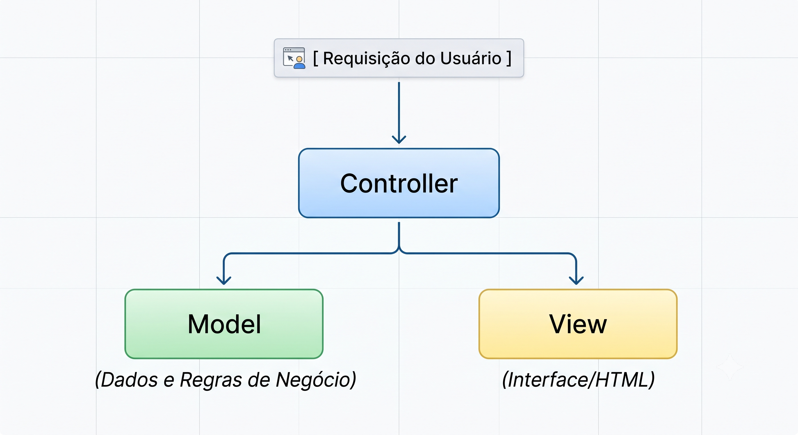
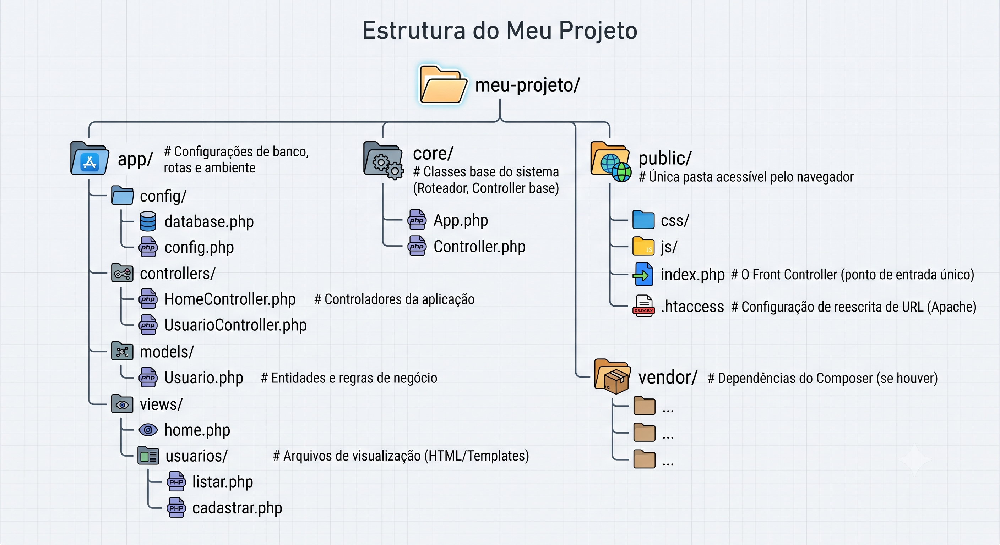

Descrição: Esta aula aborda a arquitetura do padrão MVC em PHP e a reorganização estrutural das pastas de um projeto.
Ensina o passo a passo prático para refatorar códigos "spaghetti" legados utilizando os princípios da Orientação a Objetos.
Explora também o funcionamento do Front Controller, do roteamento centralizado e do conceito de autoloading via PSR-4.
O padrão MVC (Model-View-Controller) é a espinha dorsal da arquitetura de software para a web.
Quando falamos de PHP antigo ou legado, é muito comum encontrar o famoso código "spaghetti" (onde HTML, CSS, SQL e lógica de negócios dividem alegremente a mesma linha de código).
Migrar disso para o MVC não é só uma questão de capricho; é o que vai salvar sua sanidade mental, permitindo testabilidade, manutenção e escalabilidade.
Abaixo, um guia profundo de como funciona o MVC em PHP, como organizar a estrutura de pastas e um passo a passo prático de refatoração.
O propósito do MVC é a Separação de Conceitos ( Separation of Concerns ).
Cada camada tem um papel estrito e não deve assumir a responsabilidade das outras.

O Model gerencia os dados e as regras de negócio da aplicação.
Ele não sabe que a web existe, não sabe o que é HTML e não lida com requisições HTTP.
Em PHP: Geralmente são classes que representam tabelas ou serviços (ex: Usuario.php, ProdutoRepository.php).
A View é a interface apresentada ao usuário. Em aplicações PHP puras, é o local onde o HTML reside.
Pode conter lógica simples de exibição (como um foreach para listar produtos ou um if para mostrar uma mensagem).
Em PHP: Arquivos .php que são templates HTML com pequenas tags PHP (<?= $variavel ?>) ou motores de renderização como Twig/Blade.
O Controller intermedia a comunicação entre o Model e a View. Ele recebe o impacto da requisição do usuário.
Em PHP: Classes com métodos (ações) chamados pelas rotas da aplicação (ex: HomeController.php, AuthController.php).
Para implementar o MVC de forma profissional, precisamos tirar os arquivos da raiz e organizá-los logicamente.
Uma estrutura moderna e segura para PHP adota o padrão de expor apenas uma pasta pública (public/) para a internet, protegendo o código-fonte.
Sugestão de Arquitetura de Pastas

Em vez de acessar meu-projeto/usuarios/listar.php diretamente, o usuário acessa meu-projeto/usuarios.
O arquivo .htaccess na raiz ou na pasta public/ redireciona todas as requisições para o public/index.php.
Este arquivo lê a URL, descobre qual Controller deve chamar (Roteamento) e inicializa a aplicação.
Vamos ver a anatomia de uma refatoração. Imagine o seguinte cenário clássico de código "tudo em um":
Este arquivo faz tudo: conecta ao banco, processa exclusão, busca dados e exibe HTML.
<?php
// TUDO MISTURADO: Banco, Lógica e HTML
$pdo = new PDO("mysql:host=localhost;dbname=teste", "root", "");
if (isset($_GET['excluir'])) {
$id = $_GET['excluir'];
$stmt = $pdo->prepare("DELETE FROM usuarios WHERE id = ?");
$stmt->execute([$id]);
header("Location: usuarios.php");
exit;
}
$stmt = $pdo->query("SELECT * FROM usuarios");
$usuarios = $stmt->fetchAll(PDO::FETCH_ASSOC);
?>
<!DOCTYPE html>
<html>
<head><title>Lista de Usuários</title></head>
<body>
<.h1>Usuários<./h1>
<ul>
<?php foreach($usuarios as $u): ?>
<li>
<?= $u['nome'] ?>
<a href="usuarios.php?excluir=<?= $u['id'] ?>">Excluir</a>
</li>
<?php endforeach; ?>
</ul>
</body>
</html>Para organizar isso, vamos fatiar esse arquivo nas pastas corretas usando orientação a objetos e boas práticas (como injeção de dependência simplificada).
Isolamos a conexão com o banco de dados.
<?php
namespace App\Config;
use PDO;
class Database {
public static function getConnection() {
// Em produção, use variáveis de ambiente (.env)
return new PDO("mysql:host=localhost;dbname=teste", "root", "");
}
}Toda a interação com a tabela usuarios e suas regras ficam aqui.
O Model não sabe quem o chamou, ele apenas entrega ou manipula dados.
<?php
namespace App\Models;
use PDO;
use App\Config\Database;
class Usuario {
private $db;
public function __construct() {
$this->db = Database::getConnection();
}
public function getAll() {
$stmt = $this->db->query("SELECT * FROM usuarios");
return $stmt->fetchAll(PDO::FETCH_ASSOC);
}
public function delete($id) {
$stmt = $this->db->prepare("DELETE FROM usuarios WHERE id = ?");
return $stmt->execute([$id]);
}
}Ele toma as decisões. Recebe a ação, fala com o Model e decide qual View carregar.
<?php
namespace App\Controllers;
use App\Models\Usuario;
class UsuarioController {
// Ação de Listar
public function index() {
$usuarioModel = new Usuario();
$usuarios = $usuarioModel->getAll();
// Passa os dados para a View
require_once __DIR__ . '/../views/usuarios/listar.php';
}
// Ação de Excluir
public function excluir() {
if (isset($_GET['id'])) {
$usuarioModel = new Usuario();
$usuarioModel->delete($_GET['id']);
}
// Redireciona usando a rota interna
header("Location: /usuarios");
exit;
}
}Código HTML limpo. Sem conexões SQL, sem queries. Apenas lê as variáveis que o Controller disponibilizou (neste caso, $usuarios).
<!DOCTYPE html>
<html lang="pt-br">
<head>
<meta charset="UTF-8">
<title>Lista de Usuários</title>
</head>
<body>
<.h1>Usuários<./h1>
<ul>
<?php foreach($usuarios as $u): ?>
<li>
<?= htmlspecialchars($u['nome']) ?>
<a href="/usuarios/excluir?id=<?= $u['id'] ?>">Excluir</a>
</li>
<?php endforeach; ?>
</ul>
</body>
</html>Para que tudo isso funcione sem um framework pesado (como Laravel ou Symfony), o seu arquivo central index.php precisa interpretar a URL e chamar o Controller certo.
Um exemplo bem básico de como isso funciona:
<?php
// Autoload para carregar as classes automaticamente (PSR-4 via Composer ou manual)
require_once __DIR__ . '/../vendor/autoload.php';
// Captura a URL digitada (ex: /usuarios ou /usuarios/excluir)
$url = parse_url($_SERVER['REQUEST_URI'], PHP_URL_PATH);
// Roteamento simples
if ($url === '/usuarios' || $url === '/') {
$controller = new \App\Controllers\UsuarioController();
$controller->index();
} elseif ($url === '/usuarios/excluir') {
$controller = new \App\Controllers\UsuarioController();
$controller->excluir();
} else {
http_response_code(404);
echo "Página não encontrada!";
}| Aspecto | Antes (Spaghetti) | Depois (MVC Profissional) |
|---|---|---|
| Manutenção | Alterar o layout corria o risco de quebrar uma query SQL. | Layout (View) e Queries (Model) estão em arquivos totalmente isolados. |
| Reutilização | "Se precisasse listar usuários em uma API, teria que reescrever a query." | Basta chamar o método $usuarioModel->getAll() em um novo ApiController. |
| Segurança | Conexões e credenciais espalhadas por múltiplos arquivos. | Centralizado em /config, facilitando o uso de variáveis de ambiente seguras. |
| Trabalho em Equipe | "Desenvolvedores front-end e back-end mexiam no mesmo arquivo, gerando conflitos." | Front-end mexe apenas na pasta /views, Back-end foca em /models e /controllers. |
Resumindo: Aqui estão os pilares fundamentais e inegociáveis extraídos dessa análise para guiar a reestruturação do seu projeto PHP:
Migrar do código spaghetti para o MVC exige abandonar scripts puramente lineares e adotar a Orientação a Objetos (POO).
A transição bem-sucedida segue uma ordem lógica:
Se existe um ponto nessa transição que exige total atenção e merece uma pesquisa profunda, ele é: O Roteamento Centralizado e o padrão Front Controller (com Autoloading PSR-4).
Por que este ponto? Porque ele é a porta de entrada e a fundação técnica de todo o ecossistema MVC.
Se você não dominar o roteamento, você não conseguirá fazer o MVC funcionar na prática, e seu projeto continuará refém de arquivos soltos acessados diretamente pelo navegador.
Para dominar o coração da infraestrutura de um framework MVC, divida sua pesquisa em três pilares técnicos:
No código antigo, para ver os usuários, o link era meusite.com/usuarios.php. No MVC profissional, o link deve ser meusite.com/usuarios.
O foco da pesquisa: Como configurar o servidor web para que qualquer URL digitada (seja /produtos, /perfil ou /usuarios/excluir) seja capturada internamente e enviada de forma invisível para o arquivo public/index.php.
O index.php recebe a string da URL (ex: /usuarios/editar/5). O Roteador é o mecanismo que quebra essa string para descobrir:
O foco da pesquisa: Padrões de projeto para criação de roteadores simples em PHP, ou como integrar um componente de rotas profissional e seguro (como o Symfony Router ou FastRoute) usando o Composer.
No modelo antigo, enche-se o código de include e require no topo de cada página.
No MVC, com dezenas de Models e Controllers, gerenciar isso manualmente se torna um inferno.
O foco da pesquisa: A norma PSR-4 (padrão da comunidade PHP para carregamento automático de classes baseado em Namespaces) e como o Composer automatiza isso com o comando composer dump-autoload.
Dominando o Roteamento e o Front Controller, você não estará apenas organizando pastas; você estará criando, do zero, a estrutura de um framework PHP proprietário, exatamente da mesma forma que gigantes como o Laravel e o Symfony operam por baixo do capô.